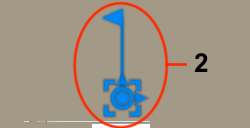

Rearranging Map¶
Bodies in the map created can be manually flipped, rotated and moved in three ways.
Flip Body Note: Flipping bodies must be done before any other movement.
Press Escape to clear any selections
Select a body in map
Right click, and click Flip

Rotate and Move Notes: Flipping bodies, if desired, must be done before any other movement. Run Label Map task on map object to correct labeling after move.
To move body on map
Press Escape to clear any selections
Select a body in map
Right click and select Unsuppress Joint (1)
Double click the displayed joint (2)
Rotate or Move within or between the boards
Press Enter to complete move
Right click body and select Suppress Joint (3)

 
{kind=link}
Simple Moves Note: A simple approach can be used if you do not wish to rotate bodies.
Click Top on the view cube to align the top facing forward. This assumes the Map Orientation option matches the user preferences for modeling orientation.
Flip bodies if desired
Press Escape to clear any selections
Select and drag a body within or between the boards